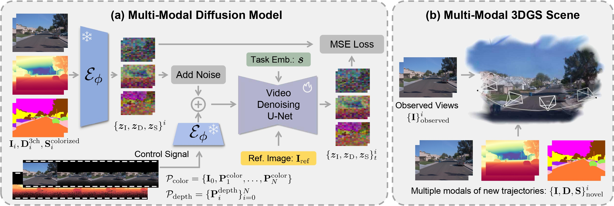
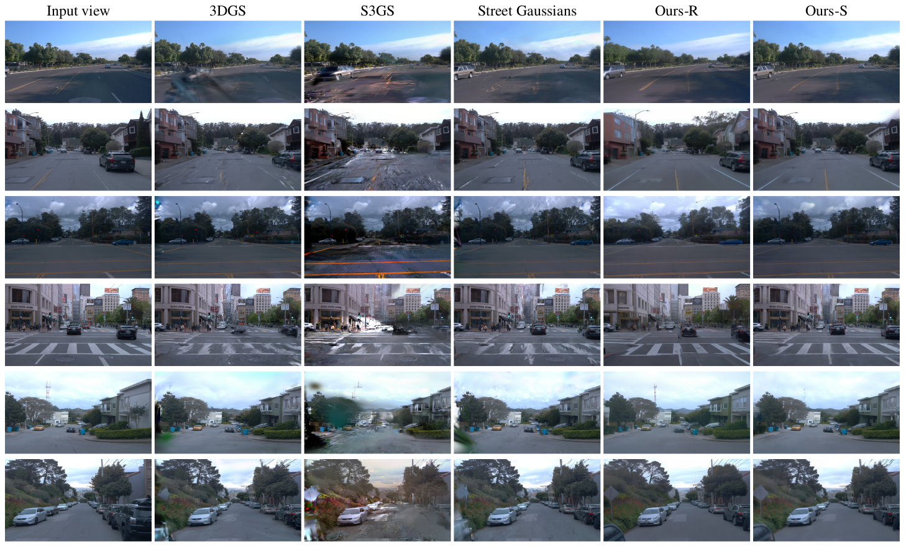
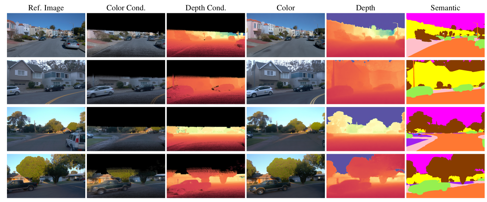

TL;DR
Abstract
Recent breakthroughs in radiance fields have significantly advanced 3D scene reconstruction and novel view synthesis (NVS) in autonomous driving. Nevertheless, critical limitations persist: reconstruction-based methods exhibit substantial performance deterioration under significant viewpoint deviations from training trajectories, while generation-based techniques struggle with temporal coherence and precise scene controllability. To overcome these challenges, we present MuDG, an innovative framework that integrates Multi-modal Diffusion model with Gaussian Splatting (GS) for Urban Scene Reconstruction. MuDG leverages aggregated LiDAR point clouds with RGB and geometric priors to condition a multi-modal video diffusion model, synthesizing photorealistic RGB, depth, and semantic outputs for novel viewpoints. This synthesis pipeline enables feed-forward NVS without computationally intensive per-scene optimization, providing comprehensive supervision signals to refine 3DGS representations for rendering robustness enhancement under extreme viewpoint changes. Experiments on the Open Waymo Dataset demonstrate that MuDG outperforms existing methods in both reconstruction and synthesis quality.
Architecture

Comparisons with the State-of-the-art
We present qualitative comparisons with the following state-of-the-art models:

Visualization of multi-modal results
